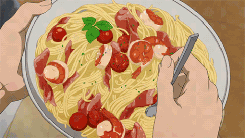

Spaghetti
Surprise friends and family with this unusual but flavorful spaghetti dish. Be prepared for encores.
Ingredients
- 1 pound spaghetti
- 2 tsp salt
- 1 pound Dominican "salami"
- 2 tablespoon olive oil
- 1 onion, , large diced
- 1 bell pepper, cut into small cubes
- ¼ cup pitted green olives
- 2 garlic cloves, crushed
- 1 tablespoon capers, (optional)
- 4 plum tomatoes, cut into small cubes
- ¼ tsp oregano
- 2 cups tomato sauce
- ¼ tablespoon vinegar, (optional)
- ½ cup evaporated milk, (optional)
- ¼ tsp pepper, or to taste
- ¼ cup grated Parmesan or Pecorino cheese, (optional)
Steps
- Boil spaghetti: Boil the spaghetti until slightly softer than al dente having added 1 teaspoon of salt to the water (set aside remaining salt). Drain the water and set spaghetti aside.
- Cook the sauce: While the spaghetti is boiling, heat oil in a pan over medium heat. Cut the salami into cubes. Cook and stir the salami until it browns.
- Mix spaghetti and sauce: Add milk and the spaghetti and mix well. Stir until the milk is mixed through, but do not let it boil or the milk will curdle. Season with pepper and salt to taste.
- Serve: This dish is best served hot. Garnish with the cheese.